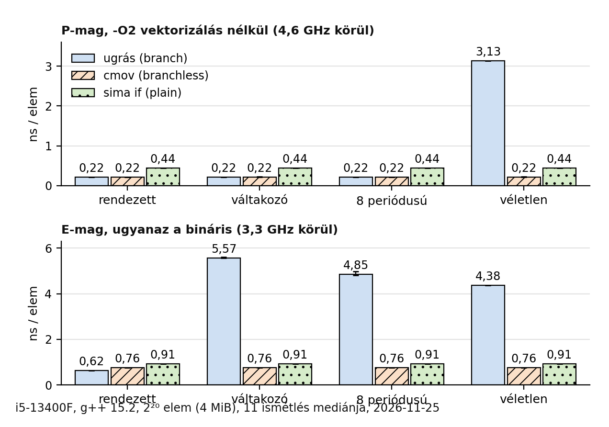
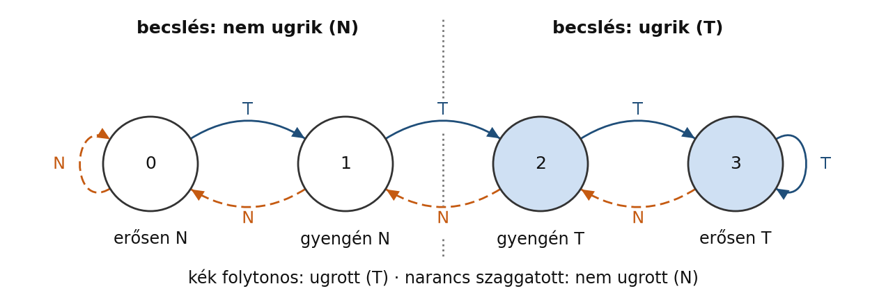
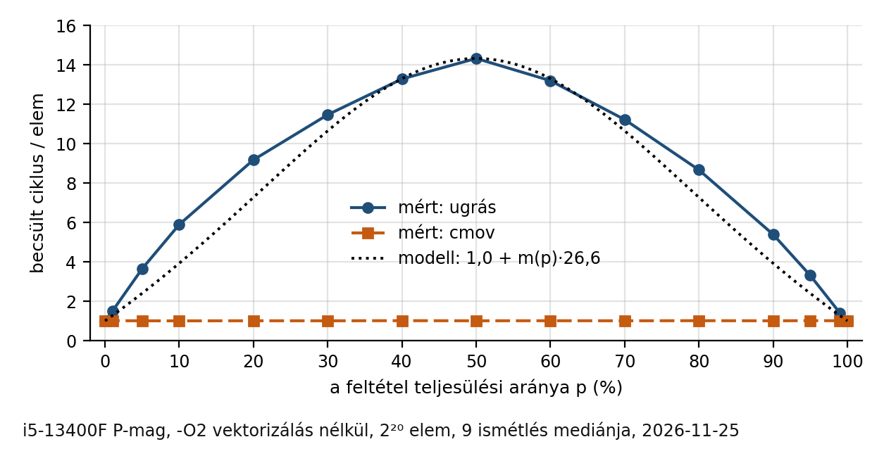

Egy tömb elemei közül azokat adjuk össze, amelyek elérnek egy
küszöböt. Ez a futó branchy kernel. A program kétszer
ugyanazt a 2²⁰ darab, 0 és 99 közötti számot dolgozza fel, 50-es
küszöbbel: egyszer rendezve, egyszer véletlen sorrendben. Ugyanaz az
utasítássorozat fut, ugyanazok az értékek kerülnek sorra, csak a sorrend
más. A labor gépének teljesítménymagján (i5-13400F, 2026-11-25) a
rendezett tömb elemenként 0,22 ns, a véletlen 3,13 ns:
tizennégyszeres a különbség.

Figyeld meg az ábrán, hogy a kék oszlopok mozognak, a másik kettő nem. A kék változatban van egy adatfüggő feltételes ugrás, a másik kettőben nincs. A processzor az ugrás kimenetét csak az összehasonlítás után ismeri, de addigra a futószalag elejének már rég tudnia kellett volna, honnan olvassa a következő utasításokat. Ezért tippel. Ez az alfejezet arról szól, hogyan tippel, mikor téved, és mennyibe kerül a tévedés.
A Vezérlési hazárdok és kivételek a futószalagban című alfejezet megmutatta a problémát: a feltételes ugrás az EX szakaszban dől el, közben a futószalag már betöltött utasításokat. Ha rosszak, el kell dobni őket. Minél hosszabb a futószalag, annál több a kárba veszett munka, ezért érdemes jól tippelni.
A tippet elágazásbecslésnek (branch prediction) nevezzük. Két fajtája van. A statikus becslés a program szövegéből dönt, és futás közben nem változik. A dinamikus becslés a múltbeli kimenetekből tanul: egy kis hardveres táblában feljegyzi, mit csinált az adott ugrás eddig.
A legegyszerűbb dinamikus ötlet: „ugyanaz lesz, mint legutóbb”. Egy ciklus végi ugrásra ez majdnem jó, de minden kilépésnél kétszer hibázik. A javítás az, hogy egyetlen kivételtől ne változtassunk véleményt: a becslő négy fokozatban tárolja, mennyire biztos a dolgában, és csak két egymás utáni meglepetés fordítja meg. Ez a kétbites telítődő számláló (two-bit saturating counter), amelyet a Véges állapotgépek című alfejezetben már felrajzoltunk.

Az ábrán a függőleges pontozott vonal a döntési határ. A határtól távoli állapotból (0 vagy 3) egy ellenkező kimenet csak a szomszédos, még ugyanazt becslő állapotba visz.
A továbbiakban egy feltételes ugrás kimenete T (taken, ugrott) vagy N (not taken, nem ugrott). A tévesztési arány a hibásan becsült elágazások hányada. A Vezérlési hazárdok és kivételek a futószalagban alfejezet büntetési modellje szerint, ha az utasítások hányada elágazás, és egy tévesztés ciklust visz el:
A második tag a tévesztések ára utasításonként; a becslő -et csökkenti, a futószalag felépítése -t határozza meg.
A három klasszikus szabály:
| Szabály | Becslés | Mire jó |
|---|---|---|
| mindig nem ugrik | N | a futószalag magától ezt teszi: a következő címet tölti be |
| mindig ugrik | T | ciklusoknál jobb, de a célcímet is ismerni kell |
| BTFN (backward taken, forward not taken) | hátrafelé T, előre N | a hátra mutató ugrás jellemzően ciklus |
A táblázat utolsó sora a legokosabb: a fordító a ciklus végi visszaugrást a ciklus végére teszi, tehát a hátra mutató ugrás többnyire megismétlődik.
A programozó fordítói tippet is adhat: C++20-ban
[[likely]] és [[unlikely]], GCC-ben
__builtin_expect(feltétel, várt_érték). A mai x86-magok
dinamikus becslőt használnak, ezért a tipp nem a becslő állapotát
állítja, hanem a kód elrendezését változtatja: a
valószínű ág folytatódik egyenesen, a ritka kikerül az útból. Lásd a Kód
részben.
Definíció. Az egybites becslő egy bitben tárolja az ugrás legutóbbi kimenetét, és azt jósolja.
Definíció. A kétbites telítődő számláló állapota . A becslés T, ha . A tényleges kimenet után
A „telítődő” azt jelenti, hogy a számláló nem fordul át: a 3 fölé és a 0 alá nem lép. A könyvben a kezdőérték 1 („gyengén nem ugrik”).
Vegyünk egy körös ciklust, amelyet sokszor végrehajtunk: a visszaugrás kimenete darab T, majd egy N. Az egybites becslő körönként kétszer téved: a kilépéskor, és a következő végrehajtás első körében, mert ekkor még a kilépés N kimenetét ismétli. A kétbites számláló a kilépés után a 3-ból csak 2-be esik, tehát az első körben is T-t mond: egy tévesztés marad. Az állandósult pontosság , illetve . Tízkörös ciklusnál ez 80% és 90%.
Egy programban sok ugrás van, ezért a számlálókat táblában tároljuk, és az ugrás címéből (PC) indexeljük. bejegyzésnél
A néggyel osztás azért kell, mert a 32 bites RISC-V utasítások címe néggyel osztható, a két alsó bit mindig nulla. A tábla bit; 4096 bejegyzés 1 KiB. Ez a bimodális becslő (bimodal predictor), mert minden ugrást egy kétállású (többnyire T vagy többnyire N) viselkedésnek tekint.
A táblában nincs címke: nem ellenőrizzük, kié a bejegyzés. Ha két ugrás indexe egyezik, álnevesítés (aliasing) lép fel. Lehet káros (ellentétes irányú ugrások rontják egymást), semleges, ritkán hasznos. A nagyobb tábla ritkítja az ütközést, de a hardverben drágább és lassabb.
Mit tud a kétbites számláló, ha a kimenet minden körben, egymástól függetlenül, valószínűséggel T? A négy állapot egy láncot alkot. Állandósult állapotban az és közötti átlépések két irányban ugyanolyan gyakoriak: , tehát az hatványaival arányos: . Tévedés akkor van, ha és N jön, vagy és T. Az összeget rendezve
Az egybites becslő akkor téved, ha két egymást követő kimenet eltér: . -nél mindkettő : a független véletlent semmi sem tudja megjósolni. -nél , : a kétbites számláló majdnem eléri az elvi legjobb 0,10-et.
Továbbvitt eredmény. Az archkit.bpred
közös interfésze: predict(pc) becslést ad és nem változtat
állapotot, update(pc, taken) a tényleges kimenettel tanít,
explain(pc) a belső állapotot mutatja,
storage_bits() a tárolóigényt; az evaluate egy
elágazásnyomon számolja a tévesztést. A bimodális becslő (PC-vel
indexelt kétbites számlálótábla) a viszonyítási alap a következő
alfejezetekben: Korrelált és globális előzményű
becslők, TAGE-elv és perceptron-becslő, Célcím-becslés: BTB, RAS, közvetett ugrások és a
front-end.
Egy négykörös ciklust kétszer hajtunk végre: a visszaugrás kimenete
TTTNTTTN. Az egybites becslő 0-ról (N) indul, a kétbites
számláló 1-ről.
| kör | kimenet | 1 bit: állapot → becslés | 1 bit | 2 bit: állapot → becslés | 2 bit |
|---|---|---|---|---|---|
| 1 | T | 0 → N | téved | 1 → N | téved |
| 2 | T | 1 → T | jó | 2 → T | jó |
| 3 | T | 1 → T | jó | 3 → T | jó |
| 4 | N | 1 → T | téved | 3 → T | téved |
| 5 | T | 0 → N | téved | 2 → T | jó |
| 6 | T | 1 → T | jó | 3 → T | jó |
| 7 | T | 1 → T | jó | 3 → T | jó |
| 8 | N | 1 → T | téved | 3 → T | téved |
Az 5. sor a lényeg: a kilépés után az egybites becslő „átállt” N-re, a kétbites a 2-es állapotban még T-t mond. Eredmény: 4, illetve 3 tévesztés. A harmadik, negyedik és további végrehajtásokban körönként 2, illetve 1 tévesztés marad.
Ár a futószalagban. Legyen , . Ha egy statikus szabály arányban téved, a bimodális becslő pedig arányban, akkor ötszakaszos futószalagon () a CPI , illetve . Mélyebb futószalagon () ugyanez és : a mély futószalag sokkal érzékenyebb a becslő minőségére.
Álnevesítés számokban. 16 bejegyzésű táblában a
0x1000 című ugrás indexe
,
a 0x1010 címűé 4, a 0x1040 címűé
.
Az első és a harmadik tehát egy számlálón osztozik.
Az archkit.bpred a fenti becslőket valósítja meg. Az
első blokk a kézi példát reprodukálja.
import sys; sys.path.insert(0, "code")
from archkit import bpred as B
for p in (B.OneBit(), B.Bimodal()):
res = B.evaluate(p, "TTTNTTTN", log=True)
states = [s["before"]["counter"] for s in res.log]
wrong = [s["i"] + 1 for s in res.log if not s["correct"]]
print(f"{p.name:8s} állapotok: {states} téves körök: {wrong}")
loop = B.loop_trace(10, repeats=1000)
for p in (B.Static(), B.Static("taken"), B.OneBit(), B.Bimodal()):
r = B.evaluate(p, loop, warmup=10)
print(f"{p.name:17s} 10 körös ciklus, pontosság: {r.accuracy:.1%}")one-bit állapotok: [0, 1, 1, 1, 0, 1, 1, 1] téves körök: [1, 4, 5, 8]
bimodal állapotok: [1, 2, 3, 3, 2, 3, 3, 3] téves körök: [1, 4, 8]
static-not_taken 10 körös ciklus, pontosság: 10.0%
static-taken 10 körös ciklus, pontosság: 90.0%
one-bit 10 körös ciklus, pontosság: 80.0%
bimodal 10 körös ciklus, pontosság: 90.0%A „mindig ugrik” itt ugyanolyan jó, mint a kétbites számláló, de egy másik, jellemzően nem ugró elágazásnál ugyanennyire rossz lenne. Most az álnevesítés: két ugrás váltakozik, az egyik mindig ugrik, a másik soha.
pair = [B.Branch(0x1000, True, 0x1100), B.Branch(0x1040, False, 0x1100)] * 100
for entries in (16, 32):
p = B.Bimodal(entries)
r = B.evaluate(p, pair)
idx = (p.index(0x1000), p.index(0x1040))
print(f"{entries:2d} bejegyzés ({p.storage_bits():2d} bit), indexek {idx}: "
f"{r.mispredicts}/{r.branches} téves")16 bejegyzés (32 bit), indexek (0, 0): 200/200 téves
32 bejegyzés (64 bit), indexek (0, 16): 1/200 tévesKözös számlálóval a két ugrás az 1 és 2 állapot között lökdösi egymást, és minden becslés hibás. Egyetlen indexbittel több, és egyetlen tévesztés marad.
branchy mintáira?A mérés négy adatmintát használ. Modellezzük őket ugyanezzel a szerkezettel (itt a bemenet 0…255, küszöb 128; a váltakozó és a 8 periódusú minta a benchmarké):
rand = B.branchy_data(4096, seed=1)
p8 = [75, 75, 25, 75, 25, 25, 75, 25]
patterns = {"rendezett": (sorted(rand), 128), "váltakozó": ([75, 25] * 2048, 50),
"8 periódusú": (p8 * 512, 50), "véletlen": (rand, 128)}
print(f"{'minta':12s} {'egybites':>9s} {'bimodális':>10s}")
for name, (data, thr) in patterns.items():
tr = B.branchy_trace(data, threshold=thr, loop=False)
res = B.compare({"1": B.OneBit(), "2": B.Bimodal()}, tr)
print(f"{name:12s} {res['1'].miss_rate:9.1%} {res['2'].miss_rate:10.1%}")minta egybites bimodális
rendezett 0.0% 0.1%
váltakozó 100.0% 50.0%
8 periódusú 75.0% 75.0%
véletlen 50.0% 49.4%A rendezett adaton az ugrás az elején végig ugyanazt csinálja, majd egyszer irányt vált: néhány tévesztés. Véletlenen fele-fele. A két periodikus mintán a számlálók elbuknak, pedig a minta teljesen szabályos.
A C++-változatok a code/bench/bench_branchy.cpp-ben
vannak:
// code/bench/bench_branchy.cpp (részlet)
__attribute__((noinline)) std::int64_t sum_branch(const std::int32_t* a, std::size_t n,
std::int32_t t) {
std::int64_t s = 0;
for (std::size_t i = 0; i < n; ++i)
if (a[i] >= t) {
s += a[i];
asm volatile(""); // a fordító nem alakíthatja feltételes mozgatássá
}
return s;
}
__attribute__((noinline)) std::int64_t sum_branchless(const std::int32_t* a, std::size_t n,
std::int32_t t) {
std::int64_t s = 0;
for (std::size_t i = 0; i < n; ++i) {
const std::int32_t mask = -static_cast<std::int32_t>(a[i] >= t); // 0 vagy csupa 1
s += a[i] & mask;
}
return s;
}A harmadik, plain változat a sima if az
asm sor nélkül. Ellenőriztük a fordító (g++ 15.2,
-O2 -fno-tree-vectorize -fno-tree-slp-vectorize -masm=intel)
belső ciklusait:
; sum_branch: valódi feltételes ugrás
.L4: movsxd rdx, DWORD PTR [rdi+rax*4]
cmp edx, r8d
jl .L3 ; kisebb: átugorja az összeadást
add rcx, rdx
.L3: add rax, 1
cmp rsi, rax
jne .L4
; sum_branchless: a maszkból cmov lett
.L10: movsxd rax, DWORD PTR [rdi]
cmp eax, ecx
cmovl rax, rsi ; rsi = 0
add rdi, 4
add rdx, rax
cmp r8, rdi
jne .L10
; sum_plain_if: más alakú cmov
.L16: movsxd rax, DWORD PTR [rdi]
mov rcx, rax
add rax, rdx ; jelölt: s + a[i]
cmp ecx, esi
cmovge rdx, rax ; s = jelölt, ha teljesül
add rdi, 4
cmp rdi, r8
jne .L16A mért eredmény a
figures/data/ca033-rendezett-tomb.csv-ből:
from archkit import perf
meta, rows = perf.read_bench_csv("figures/data/ca033-rendezett-tomb.csv")
print(meta["cpu"], "·", meta["date"][:10], "· ok_all:", meta["ok_all"])
cyc = {(r["core"], r["variant"], r["pattern"]): r["cycles_per_elem_est"]
for r in rows if r["build"] == "novec"}
print("becsült ciklus/elem rendezett váltakozó 8-as véletlen")
for core in ("P", "E"):
for v in ("branch", "branchless", "plain"):
line = " ".join(f"{cyc[core, v, p]:8.2f}"
for p in ("sorted", "alternating", "period8", "random"))
print(f"{core}-mag {v:11s} {line}")13th Gen Intel(R) Core(TM) i5-13400F · 2026-11-25 · ok_all: 1
becsült ciklus/elem rendezett váltakozó 8-as véletlen
P-mag branch 1.00 1.00 1.00 14.36
P-mag branchless 1.01 1.01 1.01 1.02
P-mag plain 2.02 2.03 2.03 2.03
E-mag branch 2.05 18.33 15.92 14.37
E-mag branchless 2.50 2.50 2.50 2.50
E-mag plain 3.00 3.00 3.00 3.00(A ciklusszám az órajel becsléséből számolt érték, nem hardveres számláló.) Magyarázzuk meg sorban:
add rdx, rax-on keresztül
öröklődik: egy ciklus késleltetésű lánc (a mutató növelése egy külön,
ugyanilyen rövid lánc).s → add → cmov → s lánc kerül körbe, két egymás utáni
egyciklusos utasítás. A cmov tehát nem ingyenes: adatfüggőséget teremt
(a késleltetési korlátot az ILP, függőségek és
statikus ütemezés alfejezet tárgyalja; az utasítások késleltetése
gyártmányfüggő, ellenőrizendő: [S-UOPS]).perf) a mérőgépen nem voltak elérhetők.Mennyibe kerül egy tévesztés? Véletlen adaton , tehát a P-magon ciklus. Ez az effektív ár: benne van az összehasonlítás feloldásáig eltelt idő, a futószalag újratöltése és a megszakadt átfedés. Próbáljuk ki ezt a számot más teljesülési arányokra:
meta, rows = perf.read_bench_csv("figures/data/ca033-arany.csv")
meas = {r["taken_pct"]: r["cycles_per_elem_est"] for r in rows if r["variant"] == "branch"}
c0 = meas[0]
beff = (meas[50] - c0) / 0.5
print(f"c0 = {c0:.2f} ciklus, illesztett ár: {beff:.1f} ciklus/tévesztés")
for pct in (1, 5, 10, 30, 50, 90):
p = pct / 100
m = p * (1 - p) / (1 - 2 * p * (1 - p))
print(f"p = {pct:2d}%: m2 = {m:.3f} modell {c0 + m * beff:5.2f} mért {meas[pct]:5.2f}")c0 = 1.00 ciklus, illesztett ár: 26.6 ciklus/tévesztés
p = 1%: m2 = 0.010 modell 1.27 mért 1.50
p = 5%: m2 = 0.052 modell 2.40 mért 3.64
p = 10%: m2 = 0.110 modell 3.93 mért 5.89
p = 30%: m2 = 0.362 modell 10.65 mért 11.46
p = 50%: m2 = 0.500 modell 14.32 mért 14.32
p = 90%: m2 = 0.110 modell 3.93 mért 5.39
Az alak egyezik, de ritka teljesülésnél a modell alábecsül. Vagy a valódi tévesztési arány nagyobb -nél, vagy egy ritka tévesztés drágább; számláló nélkül ezt nem tudjuk szétválasztani. Jósoltunk, mértünk, és a maradék eltérést nyitottnak jelöljük.
Továbbvitt eredmény. A branchy mérés
(P-mag, 2026-11-25): rendezett adaton 1,0, véletlenen 14,4 ciklus/elem,
a cmov-os változat adattól függetlenül 1,0; a tévesztés effektív ára itt
kb. 27 ciklus. Ezt a kernelt használja újra a Spectre és Meltdown alfejezet modellje és az Esettanulmány: mérésvezérelt optimalizálás.
extern int log_count;
void report(int x);
int check_likely(int x) {
if (__builtin_expect(x < 0, 1)) { report(x); ++log_count; }
return x * 2;
}
int check_unlikely(int x) {
if (__builtin_expect(x < 0, 0)) { report(x); ++log_count; }
return x * 2;
}A g++ 15.2 -O2 -masm=intel -fcf-protection=none kimenete
(a nevek rövidítve):
check_likely: push rbx
mov ebx, edi
test edi, edi
jns .L2 ; x >= 0: a ritkának mondott ág az ugrás
call report
add DWORD PTR log_count[rip], 1
.L2: lea eax, [rbx+rbx]
pop rbx
ret
check_unlikely: test edi, edi
js .L11 ; x < 0: kiugrunk a ritka ágra
lea eax, [rdi+rdi]
ret
.L11: sub rsp, 24 ; ... report(x), számláló, visszatérésAz „unlikely” változat gyakori útja egyenes: egy nem ugró feltétel és
ret. A becslő pontosságán ez nem változtat, a front-end
munkáján és az utasítás-cache kihasználásán viszont igen.
Az interaktív lapon a felső gráf a számláló állapotát mutatja, alatta lépésenként sorakoznak a becslések. A ▶| gombbal vagy a nyílbillentyűkkel lépj.
if van, a mérés nem
mutat tévesztést. Ok: a fordító cmovvá vagy
vektorutasítássá alakította. Javítás: nézd meg az
assemblyt (g++ -S -masm=intel), mielőtt a mérést
magyarázod.[[likely]] a gépi kódban?1. (A) Szimuláld kézzel a kétbites számlálót
(kezdőérték 1) az NNTNNNTT sorozaton. Mik a becslések, hány
a tévesztés, mi a végállapot?
2. (A) Egy 4096 bejegyzésű bimodális tábla hány KiB?
Mi a 0x2A3C című ugrás indexe benne? Adj meg egy másik
címet, amely ugyanide esik.
3. (B) Egy kétkörös belső ciklus visszaugrása a
TNTNTN… mintát adja. Számold ki az egybites és a kétbites
(kezdőérték 1, illetve 2) becslő állandósult tévesztési arányát.
4. (B) Az E-magon a rendezett eset 2,05, a véletlen 14,37 ciklus/elem. Becsüld meg az effektív tévesztési árat. Mit jósol a bimodális modell a váltakozó mintára, és hogyan viszonyul ez a mért 18,33-hoz?
5. (C, programozós) Hasonlítsd össze az 1–4 bites
telítődő számlálókat (Bimodal(bits=...)) egy 20 körös
cikluson és
arányú véletlen sorozaton. Mikor segít a több bit, és mi az ára?
6. (C, mérős) Futtasd a saját gépeden:
make -C code/bench, majd a bench_branchy
programot a --mode ratio kapcsolóval. Ábrázold a
ciklus/elem értéket a teljesülési arány függvényében, illeszd az
effektív árat, és írd le a mérési feltételeket.
A processzor a feltételes ugrás kimenetét a kiértékelés előtt
megbecsüli; a tévesztés a
modell szerint ciklusokba kerül. Statikus szabályok (például BTFN) a
kódból döntenek. A dinamikus bimodális becslő PC-vel indexelt kétbites
telítődő számlálókat használ; cikluskilépésenként egyszer téved, szemben
az egybites kétszeri hibájával. Álnevesítés ront. Független véletlen
kimeneteknél
.
Mérés (P-mag): rendezett branchy 1,0, véletlen 14,4, cmov
1,0 ciklus/elem; egy tévesztés kb. 27 ciklus. A periodikus mintákat a
valódi becslő megtanulja, a bimodális nem. Az archkit.bpred
interfésze: predict, update,
explain, evaluate.
1. feladat. Állapotok a kimenet előtt: 1, 0, 0, 1, 0, 0, 0, 1; becslések: N, N, N, N, N, N, N, N. A harmadik (T) és a két utolsó T téved: 3 tévesztés a 8-ból. Az utolsó T után a számláló 2.
r = B.evaluate(B.Bimodal(), "NNTNNNTT", log=True)
print([s["before"]["counter"] for s in r.log], r.mispredicts, r.log[-1]["change"]["new"])[1, 0, 0, 1, 0, 0, 0, 1] 3 22. feladat.
bit
KiB.
,
az index 2703. A
bájttal arrébb lévő 0x6A3C ugyanide esik.
3. feladat. Egybites: mindig az előző kimenetet jósolja, a váltakozás miatt mindig téved: 100%. Kétbites 1-ről, T-vel indulva: 1 → (téved) 2 → (N, téved) 1 → …: 100%. 2-ről: T talál (3), N téved (2), T talál: 50%. A kezdőállapot (és a fázis) dönti el, mi történik; ilyen mintán a számláló nem tud tanulni.
for name, p in (("1 bit", B.OneBit()), ("2 bit, 1", B.Bimodal(init=1)),
("2 bit, 2", B.Bimodal(init=2))):
print(f"{name}: {B.evaluate(p, 'TN' * 500).miss_rate:.0%}")1 bit: 100%
2 bit, 1: 100%
2 bit, 2: 50%4. feladat. ciklus. A váltakozó mintára a bimodális modell a fázistól függően 50% vagy 100% tévesztést ad: , illetve ciklus. A mért 18,33 a kettő közé esik; egyetlen konstans árral és egyszerű modellel nem magyarázható, a valódi E-mag becslőjéről ebből a mérésből nem tudunk többet mondani.
5. feladat.
from archkit.cache import XorShift32
rng = XorShift32(11)
noise = [rng.next() < 0.7 * 2**32 for _ in range(100_000)]
loop20 = B.loop_trace(20, repeats=1000)
for bits in (1, 2, 3, 4):
init = (1 << bits - 1) - 1 if bits > 1 else 0
a = B.evaluate(B.Bimodal(bits=bits, init=init), loop20, warmup=20)
b = B.evaluate(B.Bimodal(bits=bits, init=init), B.outcomes_trace(noise))
print(f"{bits} bit: ciklus {a.miss_rate:.1%} véletlen(0,7) {b.miss_rate:.1%} "
f"tábla 4096 bejegyzéssel: {4096 * bits // 8} B")1 bit: ciklus 10.0% véletlen(0,7) 42.1% tábla 4096 bejegyzéssel: 512 B
2 bit: ciklus 5.0% véletlen(0,7) 36.4% tábla 4096 bejegyzéssel: 1024 B
3 bit: ciklus 5.0% véletlen(0,7) 31.4% tábla 4096 bejegyzéssel: 1536 B
4 bit: ciklus 5.0% véletlen(0,7) 30.1% tábla 4096 bejegyzéssel: 2048 BA cikluson a második bit felezi a hibát, a továbbiak semmit nem adnak. Zajos, de irányba húzó ugrásnál a szélesebb számláló jobban átlagol (az elvi határ 30%), cserébe arányosan több bit kell, és egy valódi irányváltást lassabban követ. A gyakorlati tervek ezért jellemzően 2–3 bites számlálókat használnak, és a pluszbiteket inkább előzményre költik.
6. feladat. Elvárt alak: a cmov-os változat
vízszintes, az ugró változat 0% és 100% körül alacsony, 50% körül
maximális. Az illesztett ár
.
A jegyzőkönyvben szerepeljen a CPU, a mag típusa és rögzítése
(--cpu), a fordító és a kapcsolók, a frekvenciaszabályozó,
az ismétlésszám és a szóródás; ha a fordító az ugrást eltünteti (a görbe
lapos), ellenőrizd az assemblyt.